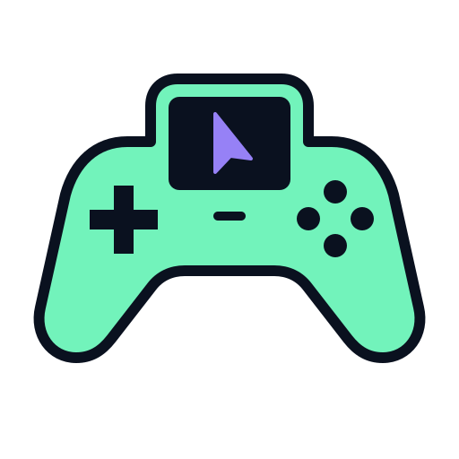
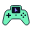

Aplicativo desktop

Gamepad DesktopPainel · janela · bandeja · executável Windows
Marca aprovada · desktop nas mãos
O controle, a tela e o cursor formam um único símbolo. O mesmo desenho acompanha o aplicativo, o site e a extensão.

Aplicativo desktop

Gamepad DesktopPainel · janela · bandeja · executável Windows
Extensão do navegador
Nova aba · configurações · ícones do Chrome
Site · fundo claro
Cabeçalho · rodapé · favicon · ícone de início
